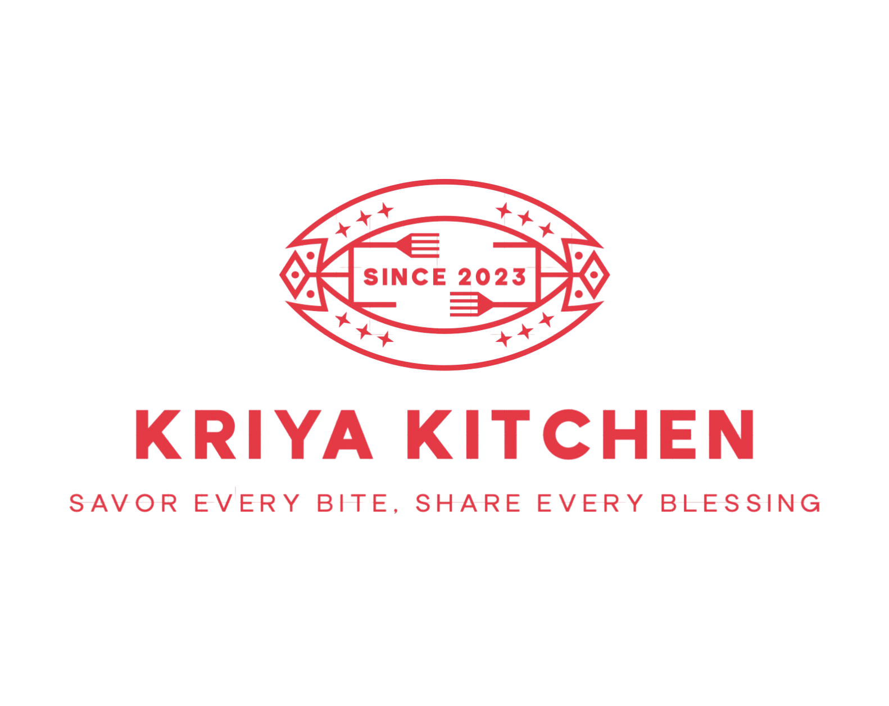

Welcome to Kriya Kitchen
Kriya Kitchen is a volunteer-run organization dedicated to raising funds to support those in need. We aim to connect with the community through our passion for service and great food.
Our Mission
We strive to improve lives by promoting volunteerism and offering delicious meals while fostering a sense of community and support. Our goal is to be a beacon of hope for those in need, through nutritious food and a compassionate network of volunteers.
How You Can Get Involved
There are many ways to help Kriya Kitchen make a difference. Whether you want to volunteer, donate, or spread the word, your support matters! Join our efforts to help others by contributing your time or resources.
- Volunteer: Sign up to serve meals, organize events, or assist with outreach programs.
- Donate: Your donations help us provide meals and support those in need in the community.
- Spread the Word: Help us grow our community by sharing our mission with others.
Our Impact
Over the past year, Kriya Kitchen has served thousands of meals, provided outreach programs, and supported numerous families in need. With the continued support of volunteers and donors, we aim to reach even more individuals and make a lasting difference in our community.
Join Us in Making a Difference
At Kriya Kitchen, we believe in the power of community. By coming together, we can create lasting change. Learn more about our upcoming events or volunteer opportunities, and be part of something meaningful.